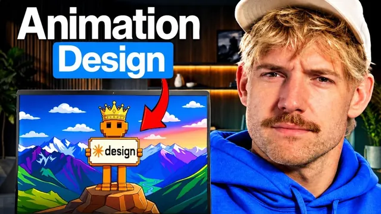

Opus 5.5로 클로드 디자인이 10배가 됐다

원본 영상 보기 →
- 브랜드 정보 추출 + 디자인 모델 조합이 핵심이에요
- 정지 이미지에서 루프 애니메이션으로 기준이 바뀝니다
- 한 번 만든 스타일을 시스템으로 저장해야 확장됩니다
한 줄 요약
Jack Roberts가 Opus 5.5로 슬라이드, 웹사이트, 숏폼 영상, 로고 애니메이션까지 수정 없이 한 번에 뽑아낸 과정을 7단계로 정리했어요. 핵심은 웹 크롤링 툴 Firecrawl로 브랜드 정보를 가져온 뒤 Opus 5.5에 넘기는 조합입니다.
전체 내용 정리
더 싸고 빨라졌고, 이제 움직이는 그래픽까지 만들어요
Jack은 Opus 5.5로 이전에는 불가능했던 그래픽·모션·디자인 작업이 가능해졌다며, 수 시간 동안 수백 달러어치 크레딧을 써 가며 테스트한 결과를 7단계로 공개합니다.
그의 설명에 따르면 Opus 5.5는 기존 Fable 5.1보다 비용이 40% 저렴하고 속도는 30% 빠르면서 품질은 그대로 유지해요.
가장 큰 변화는 그래픽 디자인 결과물을 직접 만들어 낸다는 점입니다. 영상에 나온 결과물은 모두 수정 없이 한 번의 시도(원샷)로 완성됐다고 강조해요.
1단계: 반복 재생되는 애니메이션 슬라이드
첫 번째는 Opus 5.5에 아이디어를 주고 5초, 10초, 20초 길이의 그래픽 루프를 만들어 달라고 요청하는 겁니다.
Jack은 프롬프트를 아주 간단하게 썼는데도, 파워포인트 화면처럼 생긴 가짜 슬라이드 안에 애니메이션 슬라이드를 넣어 보여 주는 결과물이 나왔어요. 원하는 브랜드 팔레트와 색상도 반영해 줍니다.
Jack은 단계별로 효과가 좋았던 프롬프트를 'RISE 시스템'이라는 이름으로 묶어 영상 설명란에 공유했어요.
2단계: Firecrawl로 브랜드를 긁어오세요
두 번째 단계의 핵심 도구는 웹사이트 정보를 추출하는 Firecrawl입니다.
URL만 넣고 스크레이프 옵션에서 마크다운 대신 '브랜딩' 정보를 선택하면, 로고와 색상 같은 브랜드 아이덴티티를 통째로 뽑아 와요. Firecrawl의 API 키를 Claude나 ChatGPT에 연결하면 AI가 직접 사이트를 스크랩해 브랜드를 파악합니다.
이렇게 얻은 정보를 Opus 5.5에 주고 사이트 상단(히어로 섹션)과 하단(푸터)에 애니메이션을 요청했어요. 그러자 파란 캐릭터가 말하는 내용이 작은 새들로 변했다가 다시 텍스트가 되는 무한 반복 그래픽과, 움직일 수 있는 세로선 푸터 애니메이션이 나왔습니다.
같은 방식으로 "제품 데모 하나 만들어 줘"라는 요청만으로 징글(짧은 로고송)까지 붙은 제품 데모 영상도 한 번에 만들어졌어요.
3~4단계: 말하는 영상에 그래픽 입히고, 비율 바꾸기
세 번째는 인스타그램에서 흔히 보는 형식이에요. 상단에 그래픽이 있고 하단에 사람이 말하는 9:16 세로 영상이요.
Jack이 자기 영상 하나를 넣자 Opus 5.5가 프레임별로 잘라 말하는 내용에 맞춘 그래픽과 자막을 스스로 붙였습니다. 다만 Jack도 폰트는 바꾸고 싶고, 요소들을 따로 작업하기보다 한 시스템으로 통합해 구축하는 편이 낫다고 짚었어요.
그는 특정 브랜드를 다룰 때 Firecrawl로 그 회사 웹사이트 정보와 이미지를 가져와 인스타그램, 틱톡, 유튜브 쇼츠에 시각적으로 넣는 파이프라인을 구상 중입니다.
네 번째는 화면 비율 문제예요. 같은 그래픽(열기구 그림과 "커피만 있다면 무엇이든 가능하다"는 문구)을 쇼츠용 세로, 1:1 정사각형 등 원하는 사이즈로 변환했습니다. 이렇게 만든 결과물은 Blotato 같은 툴과 연결해 인스타그램, X, 틱톡, 유튜브에 한곳에서 동시에 올릴 수 있어요.
5단계: 로고를 움직이게 만들어요
Jack은 예전 창업 당시 회사를 매각하면서 디자이너와 전문 성우에게 큰돈을 들여 회사 소개 애니메이션을 만든 경험이 있습니다. 그때부터 로고가 소용돌이치며 움직이는 애니메이션을 늘 원했는데, 이제는 Opus 5.5 하나로 상당 부분을 처리할 수 있다고 봐요.
방법은 이렇습니다. Claude나 ChatGPT에 Firecrawl 연결을 사용해 나이키 사이트에서 브랜드 아이덴티티와 로고를 가져오고, 로고가 움직이는 그래픽을 만들어 달라고 요청하면 돼요.
3초 길이로 요청한 결과 나이키 스우시, 통통 튀는 듀오링고 부엉이, 스포티파이 로고 애니메이션이 별도 지시 없이 나왔습니다.
Jack의 조언이 실용적이에요. 고객 제안서나 프레젠테이션에 상대 회사 로고를 애니메이션으로 넣으면 추가적인 노력이 드러납니다.
6단계: 레퍼런스를 주면 스타일을 재현해요
여섯 번째는 스타일 참조 활용입니다. 디자이너들이 큐레이션한 디자인 레퍼런스 사이트나 핀터레스트에서 마음에 드는 그래픽을 골라 Opus 5.5에 주면 비슷한 그래픽을 만들어 줘요.
Jack이 가장 감명받은 부분은 폰트 일관성이었습니다. 저급한 AI 콘텐츠의 대표적인 특징이 AI가 만든 어색한 폰트인데, 원본의 폰트 느낌을 잘 유지했거든요. 빨강, 노랑, 초록 색상 구성의 표 디자인도 성공적으로 복제했고요.
반면 두 번째 예시는 완벽하지 않았어요. Higgsfield 같은 이미지·영상 생성기로 디테일을 보강하거나 "80년대 필터를 씌워 줘" 같은 프롬프트를 한두 번 더 주면 개선될 거라고 평가합니다.
덧붙여 Jack은 여러 AI 판별 저장소의 장점을 합치고 마케팅·영업 관점 필터를 더한 자신의 GitHub 저장소를 소개하며, 작성한 텍스트나 웹사이트에 돌려 저품질 결과물을 걸러 내라고 권해요.
7단계: 100개 브랜드를 한 번에, 그리고 나만의 시스템으로
마지막은 확장성입니다.
Firecrawl을 쓰면 106개 사이트를 4분 8초 만에 읽어 올 수 있고 토큰 비용을 최대 80% 이상 절감할 수 있어요. AI에게 직접 웹사이트를 찾게 하는 것보다 훨씬 경제적입니다.
Jack은 OpenAI, Anthropic, Cursor, Lovable, Replit, Clerk, Prisma, Monzo, Wise, Revolut, Stripe 등 100개 웹사이트의 브랜드 정보를 가져와 로고 애니메이션을 만들었어요. 각 로고의 핵심 색상을 식별해 서로 다른 색 애니메이션을 입혔고, 로고의 균형과 위치, 여백까지 잡아 냈습니다.
최종적으로는 이렇게 만든 고유 스타일을 디자인 시스템(모션 라이브러리)으로 저장해 두고 Claude, Codex, Hermes 에이전트, Grok 봇 등에 연결하면 몇 마디 입력만으로 사실상 무제한의 디자인을 얻을 수 있어요.
Jack은 한계도 짚습니다. 이런 디자인 시스템을 비즈니스나 개인 삶에 적용할 줄 모르면 많은 가치를 놓치게 된다고요.
핵심 인사이트
- 브랜드 정보 추출 + 디자인 모델 조합이 핵심이에요: Opus 5.5 단독보다 Firecrawl로 로고와 색상을 먼저 가져와 넘길 때 결과물이 '우리 브랜드답게' 나옵니다. 입력 데이터의 질이 디자인 품질을 결정해요.
- 정지 이미지에서 루프 애니메이션으로 기준이 바뀝니다: 5~20초짜리 반복 그래픽, 3초 로고 애니메이션이 원샷으로 나온다면 슬라이드·홈페이지·제안서에서 움직이는 그래픽이 차별화 포인트가 돼요.
- 한 번 만든 스타일을 시스템으로 저장해야 확장됩니다: 100개 브랜드 로고를 한꺼번에 만든 사례처럼, 스타일을 디자인 시스템으로 고정해 두면 화면 비율 변환과 다채널 배포까지 반복 작업이 사라져요.
오늘 당장 해볼 것
- Claude에 우리 사업장 로고 이미지를 올리고 "대표 색을 살려 5초짜리 반복 재생되는 로고 애니메이션을 HTML로 만들어 줘"라고 요청해 보세요. 결과를 보면 어디까지 되는지 감이 옵니다.
- 홈페이지 관리 업체에 "Opus 5.5로 히어로 섹션과 푸터에 루프 애니메이션을 넣을 수 있는지, 브랜드 색 추출은 어떻게 하는지" 물어보세요.
- 핀터레스트나 디자인 레퍼런스 사이트에서 마음에 드는 그래픽 3개를 저장해 두세요. 다음 제안서나 카드뉴스 제작 때 AI나 업체에 스타일 레퍼런스로 함께 주면 결과가 달라집니다.